Marginal Benefits 1 — The Advantages of Options
Why a long call or long put can beat plain long/short stock — judged on its marginal benefit relative to your other choices.
Options aren't sophisticated, risky, or hard — that's retail myth. This chapter proves the case practically: three advantages (limited dollar downside, dollar cost efficiency, higher percentage ROI) worked through two real 13-Feb-2018 chains, SLB calls and Macy's puts.
The gist
- The marginal benefit is the whole test: weigh an option's advantages AND disadvantages RELATIVE to your control choices (long stock, short stock, or a CFD), never in isolation.
- CALL = the right but NOT the obligation to BUY the underlying at the strike before expiry; PUT = the right but NOT the obligation to SELL at the strike before expiry. The premium is the price of that right — a debit / sunk cost.
- Standardized US contracts carry a 100-share multiplier, so cost = premium × contracts × 100. A $50 call @ $1 breaks even at $51 (strike + premium); a put breaks even at strike − premium. ATM = the strike nearest spot.
- Advantage 1 — LIMITED $ DOWNSIDE: max loss is defined to the premium; 'what you invest is your stop loss'. It kills gap risk and stop-loss randomness. Long stock can only fall to zero; a short stock loss is undefined / infinite.
- Advantage 2 — $ COST EFFICIENCY: the same underlying exposure for far less committed capital; Advantage 3 — HIGHER POTENTIAL % ROI from the extra leverage.
- SLB (13-Feb-2018, last 66.79): ATM $67 call, 9-Mar expiry, offered $2.25. $40k stock ≈ 597 sh, 33% margin = $13,200; OR six calls = $1,350. At $77 the option makes $4,650 (244%) vs stock 45.45%; $11,850 saved, risk-reward 1:3.44.
- Macy's / M (13-Feb-2018, last 24.19): ATM $24 put, 9-Mar expiry, offered $1.52 (bid $1.36). Short $26,500 ≈ 1,104 sh, 50% margin = $13,250; OR eleven puts bid @ $1.45 = $1,595. At $18 the put makes $5,005 (214%) vs short 49.8%; $11,655 saved, risk-reward 1:3.14.
- The marginal benefit is GREATER for puts than calls: a short-stock loss is theoretically unlimited (infinity), so capping it at the premium saves more than capping a long-stock loss at zero.
- Leverage constants: US physical stock 50% margin, international CFD 10% margin; financing ≈ 100–200 bps over LIBOR ÷ 365; expose no more than 5× account capital. The 'non-utilized margin' figure is a broker trick to make you trade bigger.
- Tie-back to Lesson 3: long calls and long puts rank HIGH in usefulness on the strategy table. Disadvantages come in the next video.
The marginal-benefit framing
- This is marginal-benefits video 1 of the POTM series — advantages only; disadvantages follow next video.
- Retail myths tackled head-on: that options are super-sophisticated, very risky, and hard to understand — none is true.
- Of 53 strategies generally available, simple filters cut to 16 viable ones for the retail mandate (from Lesson 3).
- Every trade decision weighs advantages vs disadvantages relative to your other choices — because you can always just be long or short a stock.
The 'marginal benefit' is the recurring test of the whole course: never ask 'is this option good?' in a vacuum — ask 'is it better than the long/short stock or CFD I could do instead?' Your control mechanism is always the plain stock position.
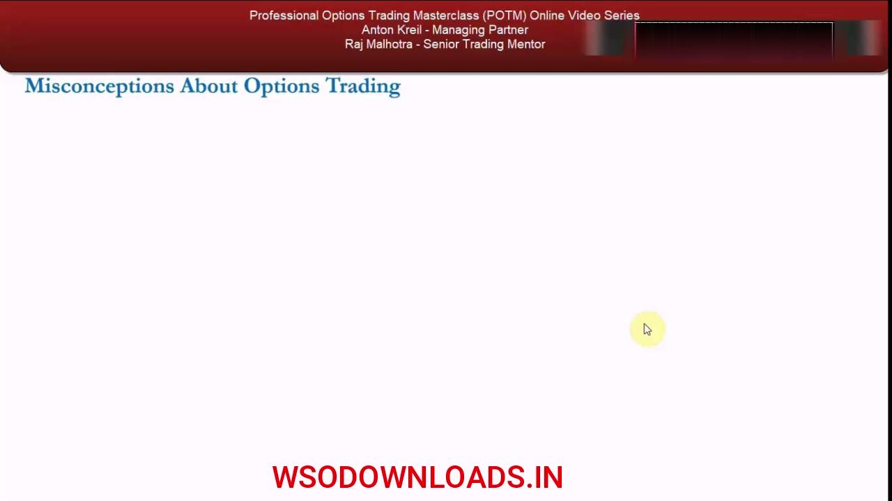
Taught practically, not with payoff diagrams
- The intellectual snobbery around options — that they need payoff diagrams and finance-class theory — is rejected.
- The method is 'learning by doing' with real examples, sticking to the principle of practicality.
- Two simple questions drive every strategy: what are its advantages, and do the disadvantages outweigh them, for a retail-mandate trader?
Anton deliberately throws you in at the deep end with real chains rather than abstract diagrams, on the view that theory-heavy teaching just makes people bored and lost.
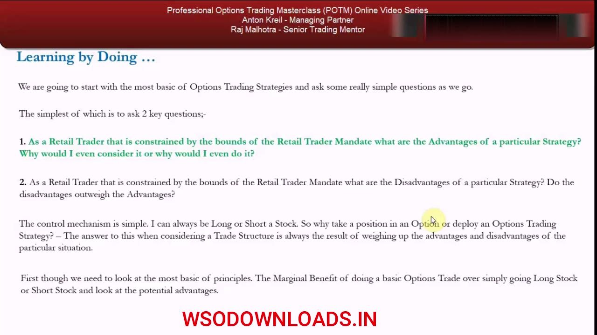
Definitions: call, put, premium, underlying
- CALL owner = the right, but NOT the obligation, to BUY the underlying at the strike price before the expiration date.
- PUT owner = the right, but NOT the obligation, to SELL the underlying at the strike price before the expiration date.
- The contract has value in itself — the right costs money; that price is the premium.
- The stock (POTM only trades stocks, not bonds) is the 'underlying stock'; the specified price is the strike, the deadline is the expiration date.
These definitions are basic by design — you should absorb them in minutes. The key nuance is 'right, not obligation': that asymmetry is the source of every advantage that follows.
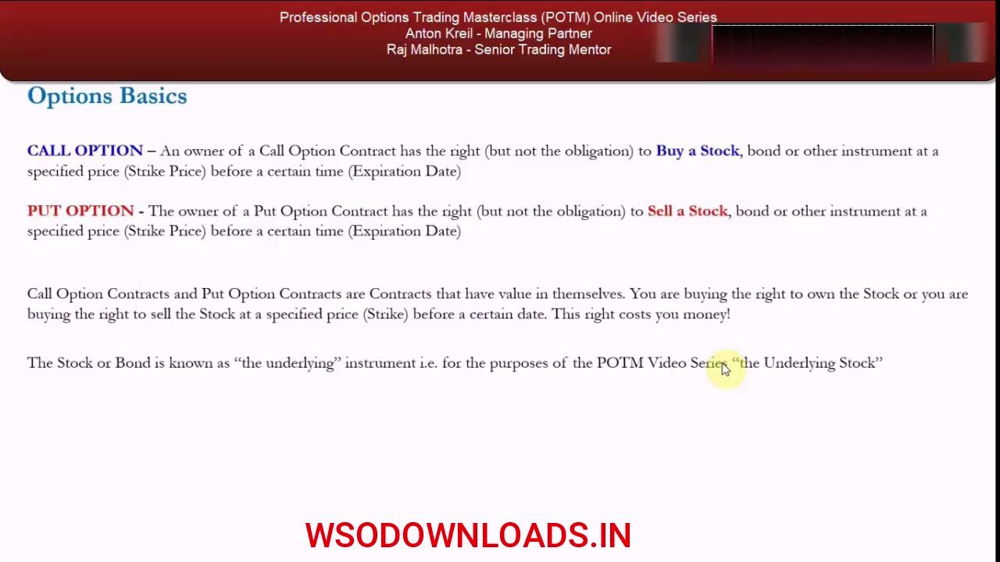
The three advantages
- Advantage 1: limited dollar downside.
- Advantage 2: dollar cost efficiency.
- Advantage 3: higher potential percentage return on investment (ROI).
- Long stock's worst case is a fall to zero (lose all invested); a short stock can in theory run to infinity — losing more than you put up.
These three advantages structure the rest of the lesson. All three trace back to the same fact: buying an option caps your loss at the premium while keeping the full directional upside.
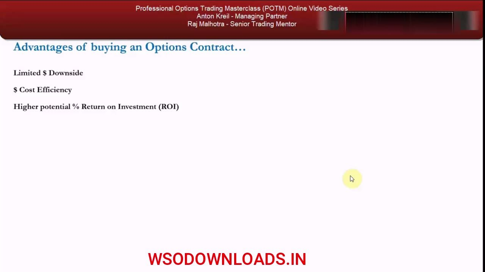
Margin, CFDs and the 5× exposure rule
- Outside the US, retail traders use CFDs (banned in the US for their leverage); in the US, physical stock is traded on margin.
- Typical margin: 10% internationally (CFD), 50% in the US for positions held more than one day — the rest is borrowed from the broker.
- Financing on the borrow is usually 100–200 bps over LIBOR, with daily interest divided by 365.
- POTM rule: expose yourself to no more than 5× the capital in your account — e.g. for $100,000 across 10 positions, keep at least $20,000 in the account, not $10,000, so you're never fully utilized and margin-called.
Being maxed on margin means one violent move forces a fresh deposit to cover losses. Choosing 5× (not the broker's max) means you pick your own risk tolerance instead of letting the broker pick it for you.
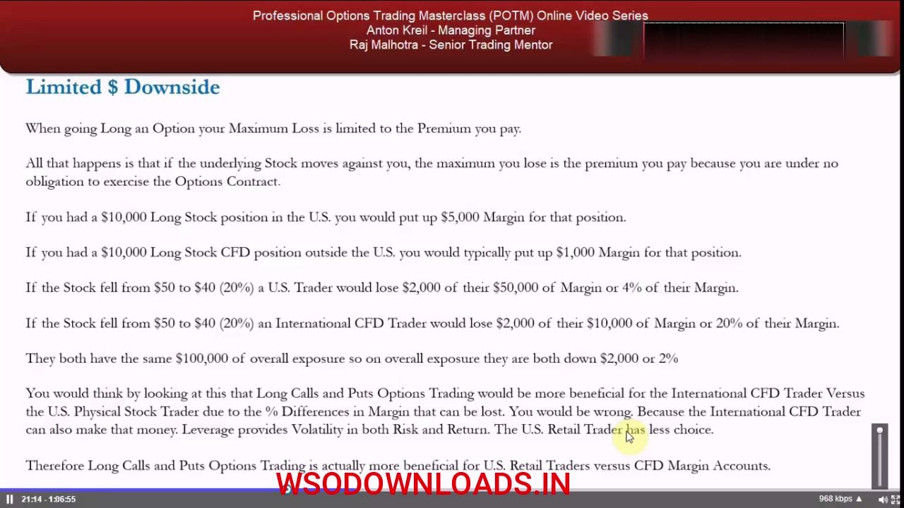
The 'non-utilized margin' broker trick
- With $20,000 in the account at 10% margin, you can take up to $200,000 exposure; against $100,000 of exposure the screen shows $10,000 'non-utilized margin'.
- That figure is really an advertisement for you to get bigger — the broker earns commission and financing fees, so it wants you leveraged up.
- Regardless of 10% or 50% margin, both traders in the examples lose the SAME dollars — only the percentage of margin differs.
- Long option loss is capped at the premium because you are under no obligation to exercise.
The margin percentages are a distraction: your real risk is the full dollar exposure, not the margin posted. Only the option genuinely defines the dollar loss.
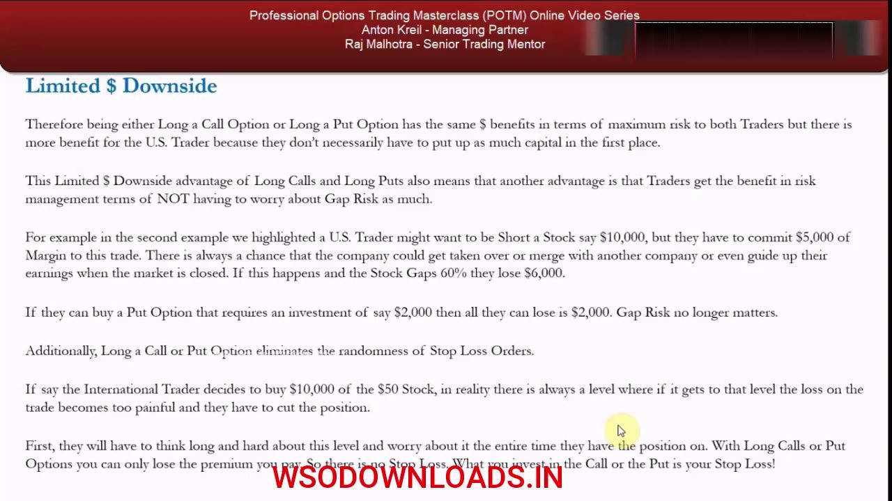
Advantage 1 — limited dollar downside in action
- Long-stock case: a $50 stock falling to $40 (−20%) loses $2,000 for both the US (4% of $50k margin) and CFD (20% of $10k margin) trader — same $2,000.
- Short-stock case: a takeover at a 60% premium costs the short $6,000 — 12% of US margin, 60% of CFD margin — but long stock can only lose to zero, whereas short losses are UNDEFINED (theoretically infinity).
- Long put caps the loss at the premium: if the put cost $2,000 premium, the worst case is $2,000 — gap risk on an overnight takeover no longer matters.
- It also removes stop-loss randomness: 'what you invest in the call or the put literally is your stop loss', so there is no stop to get gapped through.
Because the option can never lose more than the premium, it eliminates both gap risk (overnight jumps with no trades in between) and the anxiety and randomness of placing stop-loss orders.
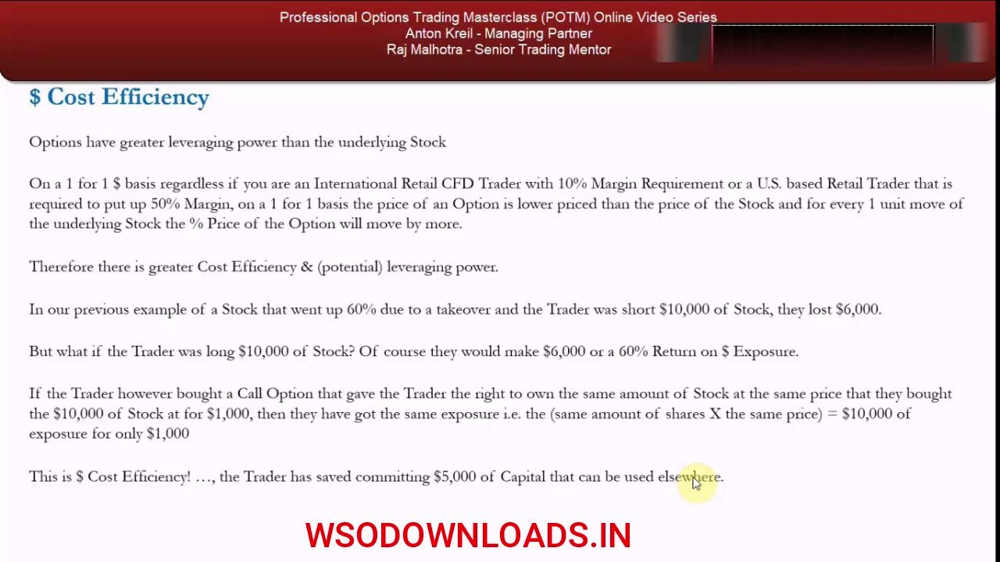
Advantage 2 — dollar cost efficiency
- For each one-unit move of the underlying, the option's percentage price moves by more — greater leveraging power.
- Same exposure, less capital: buying a call giving the right to the same shares at the same price for $1,000 instead of committing $10,000 of stock frees $5,000 (US) for other uses.
- The freed capital can collect interest, fund another winning trade, or buy more stock / more options.
- But the underlying risk is unchanged: a CFD trader posting only $1,000 margin on $10,000 exposure still loses $10,000 (plus a $9,000 margin call) if the stock hits zero.
Cost efficiency is not free leverage on the stock — it's the same directional exposure obtained for far less committed capital, with the loss now capped at that smaller premium.
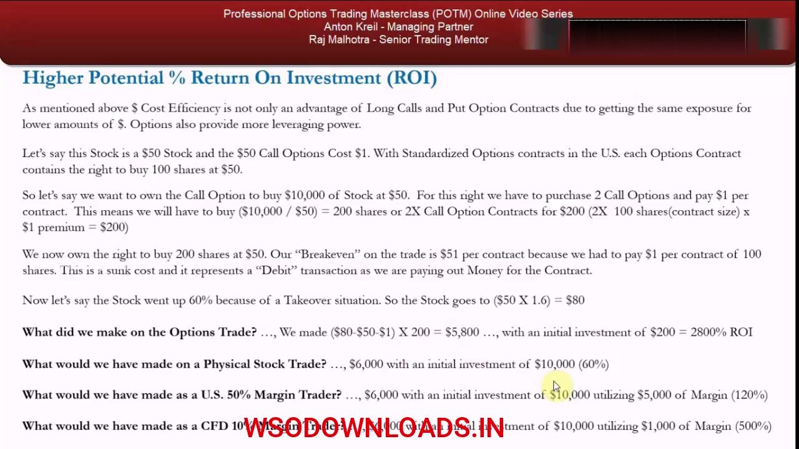
Advantage 3 — higher potential % ROI (the $50 illustration)
- Illustrative $50 stock, $50 call @ $1; to control $10,000 (200 shares) buy 2 contracts: 2 × 100 × $1 = $200 outlay.
- Breakeven $51 per contract (strike $50 + $1 premium); the premium is a sunk cost / debit transaction.
- Stock rises 60% to $80: option P&L = ($80 − $50 − $1) × 200 = $5,800 on $200 = 2,800% ROI.
- Same move as stock: Physical 60%; US at 50% margin 120%; CFD at 10% margin 500% — the option's 2,800% dwarfs them all.
Committing less capital to make more money is by definition a higher return on investment — 'you don't need an Ivy League finance degree to realize that.'
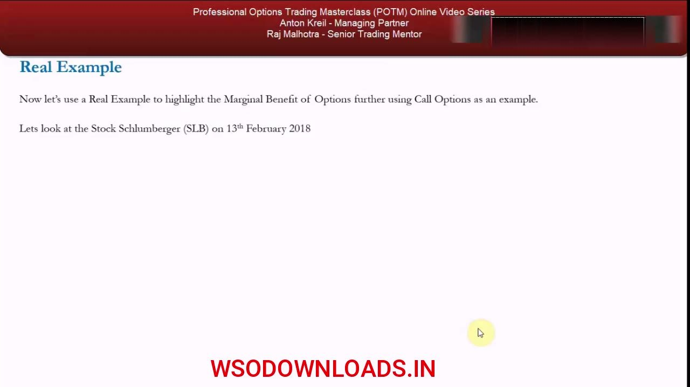
Real example — the SLB options chain
- Schlumberger (ticker SLB), a well-known US oil stock, data taken 13 February 2018.
- The options chain: calls on the left, puts on the right, strikes down the middle, last stock price at top.
- Contract selected expires 9 March 2018 — 24 days out; last price 66.79 (~$67).
- The nearest strike to spot, $67, is 'at the money' (ATM).
The options chain is the trader's core screen. ATM is simply the strike closest to the current spot price — here the $67 strike against a 66.79 last.
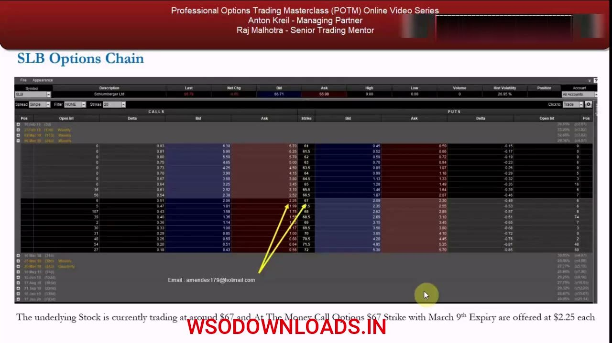
SLB call — pricing and cost efficiency
- The $67 call, 9-Mar expiry, is bid $2.06 / offered $2.25; you can lift the offer at $2.25 or bid lower (e.g. $2.10–$2.15).
- To get $40,000 exposure: $40,000 ÷ $67 ≈ 597 shares (~600); at 33% margin that ties up $13,200.
- Or buy six 9-Mar $67 calls (100-share multiplier → right to 600 shares at $67): premium = $2.25 × 6 × 100 = $1,350.
- Downside is capped at the $1,350 premium if you're 100% wrong — far less than the $13,200 of tied-up margin.
Desired dollar exposure rarely divides into neat 100-share lots — 597 shares vs 600 — a rounding you'll meet throughout the course when comparing stock to options.
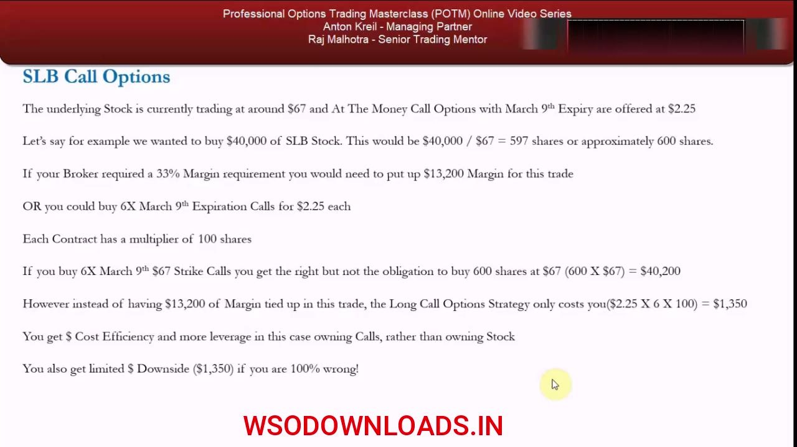
SLB call — the payoff at $77
- SLB closes 9-Mar at $77: stock P&L = $10 × 600 = $6,000 → 15% on $40k exposure, 45.45% on $13,200 margin.
- Option P&L = ($77 − $67 − $2.25) × 600 = $4,650; ROI = ($4,650 − $1,350) ÷ $1,350 = 244%.
- Capital saved vs the stock trade: $13,200 − $1,350 = $11,850, usable for interest or more trades.
- Per contract you risked $2.25 to make $7.75 → risk-reward 1:3.44; the real stock risk is the full $40,000 (a $26,800 margin call if SLB went to zero), not $13,200.
The option turns a 45.45% margin return into 244% while capping loss at $1,350 — and the stock's true risk is the whole $40,000 exposure, dwarfing the option's defined downside.
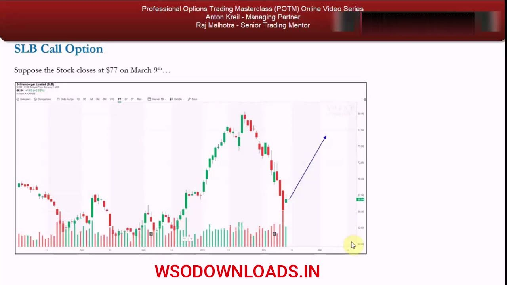
Real example — the Macy's put chain
- Macy's (ticker M), 13 February 2018; expiry again 9 March 2018 (24 days out); last price $24.19.
- Nearest strike to spot is $24; on the right-hand (put) side the $24 put is bid $1.36 / offered $1.52.
- You can lift at $1.52 or get cheeky and bid $1.45 for the 9-Mar $24 puts.
- Buying a put is buying the right to sell (go short) the stock at the strike.
Same chain layout, now reading the put side. The put lets you play the downside with the loss capped at the premium instead of an open-ended short.
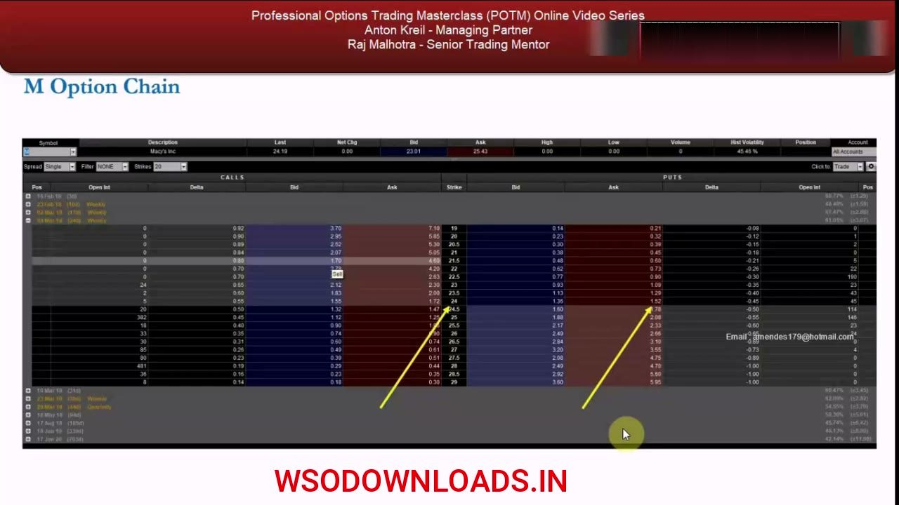
Macy's put — the payoff at $18 (and why puts win more)
- Short $26,500 ≈ $26,500 ÷ $24 = 1,104 shares (~1,100); at 50% overnight margin that ties up $13,250.
- Or buy eleven 9-Mar $24 puts bid @ $1.45: premium = $1.45 × 11 × 100 = $1,595 (right to sell 1,100 sh at $24 ≈ $26,400).
- Stock closes $18: short P&L $6,600 → 24.9% on exposure, 49.8% on margin. Put P&L = ($24 − $18 − $1.45) × 1,100 = $5,005; ROI = ($5,005 − $1,595) ÷ $1,595 = 214%.
- Capital saved $13,250 − $1,595 = $11,655; risk-reward per contract 1:3.14. Because a short's loss is unbounded (stock → infinity), the put's marginal benefit is GREATER than the call's.
The put beats a naked short 214% to 49.8% AND caps the loss at $1,595 versus an undefined short loss — so the marginal benefit is larger for puts than calls, since a short can go against you well beyond 100%.
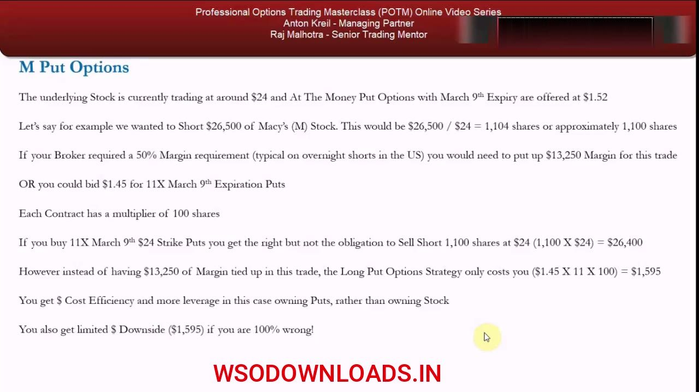
Summary — the advantages and the ranking
- The advantages of buying options: limited dollar downside, dollar cost efficiency, and higher potential % ROI.
- The marginal benefit exists for both calls and puts, but is greater for puts because short-stock losses are theoretically infinite.
- This confirms Lesson 3's table: long calls and long puts rank HIGH in usefulness for the retail mandate.
- These strategies get formalized later; the next video covers the DISADVANTAGES to complete the marginal-benefit picture.
Having seen the advantages proven on real SLB and Macy's chains, the high ranking of long calls and long puts is now earned rather than asserted — with the disadvantages still to weigh in next.
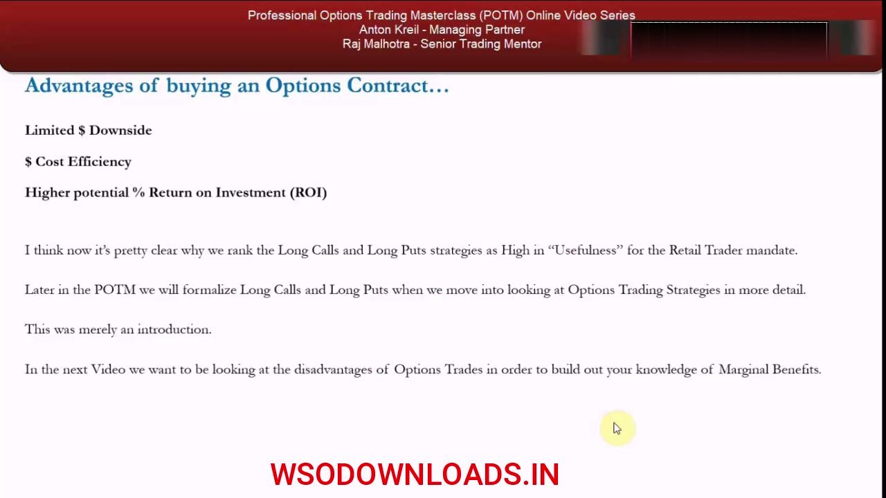
Glossary
- Marginal benefitThe net advantage of an options trade weighed against its disadvantages RELATIVE to your other choices (long stock, short stock, or CFD) — the core decision test of the course.
- Call optionThe right, but not the obligation, to BUY the underlying stock at the strike price before the expiration date.
- Put optionThe right, but not the obligation, to SELL the underlying stock at the strike price before the expiration date.
- PremiumThe price paid for an option contract — a debit / sunk cost and, for a long option, the maximum possible loss.
- Strike priceThe specified price at which the option holder may buy (call) or sell (put) the underlying.
- Expiration dateThe deadline before which the option right may be exercised.
- 100-share multiplierStandardized US contracts each cover 100 shares, so total cost = premium × contracts × 100.
- BreakevenStrike + premium for a call (e.g. $50 call @ $1 → $51); strike − premium for a put.
- At the money (ATM)The strike nearest the current spot price (e.g. the $67 strike vs a 66.79 last).
- Options chainThe trading-platform screen listing calls (left), puts (right) and strikes (middle) for each expiry, with the last stock price at top.
- Margin / leverageCapital posted to control a larger position: ~10% for international CFDs, 50% for US physical stock held overnight; the rest is borrowed.
- Non-utilized marginThe unused borrowing capacity shown on the broker screen — a prompt to trade bigger (more commission/financing), not a measure of your real risk.
- Gap riskThe jump between yesterday's close and today's open with no trades in between (e.g. an overnight takeover) — capped for an option holder at the premium.
- Financing chargeInterest on the borrowed portion of a margin/CFD position, usually 100–200 bps over LIBOR, with daily interest divided by 365.